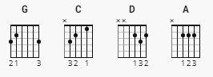

Eleganten från vidderna - Eddie Meduza

[Vers]
G C
Det bor en man i skogarna som verkar lite ding
D G
Han tar var dag som den faller sig och skiter i allting
C
Han har inte något jobb, men socialbidrag såklart
D C D
Han är slö som den, så egentligen så e han ganska smart
[Chorus]
G C
Eleganten ifrån vidderna, han betalar ingen skatt
D G
För han fuskar med deklarationerna, så skattmasen får fnatt
C
Eleganten ifrån vidderna, han gör inget under hot
D G
Om en byråkrat har bestämt en sak, ja då gör han tvärtemot
[Vers 2]
Han är allergisk mot allt sånt som lagar och förbud
Och får han syn på en snutadrul, så knottrar sig hans hud
Han säger att politiker, de är ett jävla byk
Om en byråkrat kommer med sitt prat, så åker han på stryk
[Chorus 2]
Eleganten ifrån vidderna, visar inte nån respekt
Om en höjdare vågar sticka upp så smäller det direkt
Eleganten ifrån vidderna han har inga hämningar
Han är frän och fri och han skiter i alla hot och stämningar
[Bridge]
D G
Det fina folket säger han är inte riktigt klok
A D
Men om han hör det får dom sig en jävla högerkrok
(kazoo)
[Vers 3]
Ibland så far han in till stan och köper brännevin
Sen tar han sig några huttingar och blir så rund och fin
På socialkontoret hämtar han sin veckoslant
Och naturligtvis kommer en polis, det är alltid likadant
[Chorus 3]
Eleganten ifrån vidderna, han har inte någon lapp
Så han kör ut mitt framför snutarna, och sen kör dom ikapp
Jakten går i 180 minst, uti åker grus och skog
Fram till klockan fem, sen så kör dom hem, då har snutarna fått nog
Eleganten ifrån vidderna, ja han är ju min idol
För han bråkar och jävlas med höjdarna och ger dom vad dom tål
Eleganten ifrån vidderna, är en fri och egen man
Och det skulle klart vara underbart om jag kunde bli som han
Och det skulle klart vara underbart om jag kunde bli som han